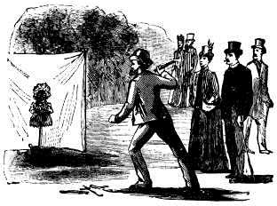

Demand-high ELT and my Aunt Sally
This short article concerns the cutting edge of ELT – anyway,
there are those who may think it does.
You may, if you have been especially alert, have discovered a new
methodological kid on the block – to wit, Demand-High ELT. For
more inspiring aperçus concerning how this will, it has been
claimed, change your professional life, visit the Wordpress page at
https://demandhighelt.wordpress.com/.
To be fair, the progenitors of the acronym make no great claims (if we leave aside the bit about ‘reinventing our profession’) to having developed a new method. In fact, they take some pains to say exactly what DHELT is not. It is not, we read:
- A method
- Anti any method
- Anti-Communicative Approach
- Anti-Dogme
- Anti-Task Based Learning
- The traditional idea of making things more difficult
So we know what it isn’t. What is it, then?
Well, that’s a bit harder to pin down but what seems to be the case
is that DHELT is pro the following:
- Pushing learners to upgrade their language and improve their skills
- Gaining real learning value from classroom activities
- Provoking interventions that make a real difference
- Shifting teachers’ preoccupations from “successful task “to “optimal learning”
- Transforming the “undoable” or “low” demand into “doable demand”
- Discovering the minimum tweak necessary at any point in any lesson to shift the activity sideways into the “challenge zone”
- Encouraging us to think about what attitude and action changes would lead to “Demand-High” teaching in our classrooms
So what is wrong with all that? You may well ask. The
answer, of course, is not much providing you can follow the
doable-undoable dichotomy.
The problem comes, as is often the case, with the setting up of easy
targets to shoot them down and appearing thereby to have discovered
something nobody else had seen. This form of caricaturing
people’s behaviour unfairly and then criticising it is not new.
It has been called an Aunt Sally after an old fairground game in
which a mannequin is set up in order for people to be able to throw
things at it to knock it down. It looks like this.

Here are some examples of the sort of behaviours DHELT is concerned
to banish from our classrooms and the sorts of assumptions we are
invited to share:
- “We assume that one person giving an answer means that everyone has ‘got it’ and we can move on”
- The tasks and techniques we use in class [have] become “rituals and ends in themselves”
- “We turn pages, check through answer lists, tick off syllabus items.”
- “The activities and the materials are … the end in themselves”
And so on.
What’s happening, of course, is that poor teaching habits and
disconnected classrooms are being set up as if they were the norm
and then shot down – and rightly so. The behaviours outlined
here are examples of poor teaching but to suggest that they are what
we all do is slightly insulting. To be fair, Scrivener and
Underhill (2013) are not at all sure of their ground. In their
1600-word article, they ask no fewer than 23 questions. This
is another rhetorical trick, of course, because such questions are
premised on the reader supplying the ‘right’ answer. Here are
a few examples with the answers on the right:
| Question | Hoped-for response | Real response |
| Where is the detailed attention to the learning going on in the learner, as opposed to the teaching going on in the teacher? | Swipe me! I’d forgotten about the learners and learning. | Where it’s always been. I pay attention to my learners and am concerned about learning. |
| Is whatever I do enabling my students to be challenged to their full human learning capacity? | No. Tell me how to do this now. | Yes, I think so. By the way, what's the other sort of learning capacity in people? |
| When a student gives a correct answer, do you tend to acknowledge it, maybe with a rubberstamping validation comment such as ‘That’s right’ or with praise or echo, and then move on to the next question? | Yes, all the time. Please tell me how to stop. | No. |
| But could it be covering up as much as it is uncovering – creating a comforting illusion that learning is happening? | Yes! That’s what it does. | No, I don't think it's doing that. |
| What if, instead, we involved many more students in thinking about and unpacking the question and answer, and in listening to each other? | What a wonderful idea. I’d never thought of challenging my students to think and listen. | (sigh) That’s what I do. |
| But is this a kind of falseness in contemporary methodology so familiar that we hardly stop to notice its disconnection from learning? | Yes. Mine eyes have seen the light. | What falseness would that be, exactly? |
Lest you are thinking I have no time for this sort of flummery at all, let me point out that I have no problem with the concept of demand-high teaching. Getting the level of challenge right in the classroom is extremely important and by no means easy to achieve. I, too, am concerned that a lot of the teaching I see and materials used in classrooms are underchallenging, conceptually, culturally and cognitively. I don't think that's a hugely debatable or controversial thing to say. One of the hallmarks of inexperienced teaching is failing to challenge learners by burning through and failing to exploit materials fully, accepting indifferently accurate language and imprecise communication from students, failing to follow up on learner output and so on. Overcoming these faults comes with training and experience, of course.
What I do have a problem with is the presumption that the initiators of the blog that they have started a new 'meme'. They haven't, really. The assumptions from which they work are, in fact, behaviours which have been in the practice of experienced and effective teachers for as long as there have been such things in ELT.
To take a few examples from the site:
- We should consider the idea of teaching one-to-one in a group setting – doesn't that just mean paying particular attention to one learner's production and learning because it will benefit not only that learner but all the others in the group who can empathise, follow the conversation and participate vicariously in that learner's development? Who doesn't do this?
- "We are proposing a demand that comes precisely at the point where the learner is capable of making their next steps forward" – that's simply a matter of a good teacher's judgement concerning when to intervene, when to extend and when to move on.
- "to shift the activity sideways into the “challenge zone”" – I think that's code for Vygotsky's Zone of Proximal Development and that's been around since the early 30s of the last century. It has echoes both of that concept and of Krashen's Input Hypothesis.
I don't want to appear churlish about this because a lot of what
Scrivener and Underhill are saying is unarguably wise (and timely).
The problem, of course, is that so much of it is
unarguable. Who has suggested that teachers shouldn't
challenge students? Who assumes that we shouldn't look for
opportunities to extend learners' output and challenge them to be
better? Who is it that is suggesting that our learners aren't
capable of more?
If you simply set out a bunch of statements about good practice then
you are in danger of falling into something squishy and numbing
along the lines of 'teachers need to be sensitive to their
students', 'learners should be taught things', 'classrooms should
contain opportunities for authentic communication' etc.
I am not suggesting that the idea of HDELT is somehow wrong, of
course. It isn’t; it’s just obvious. It’s useful to be
reminded of the need to extend learner output and raise the bar from
time to time but that’s very different from proposing something new
or daring. There is something in it. Unfortunately, the
something that's in it is neither new nor remotely arguable.
References:
Scrivener, J and Underhill, A, Demand-high teaching, in
Issue 85 March 2013 ENGLISH TEACHING professional, Pavilion
Publishing and Media Ltd
https://demandhighelt.wordpress.com/ [accessed 6 February 2014]
(Graphic from Wikipedia)